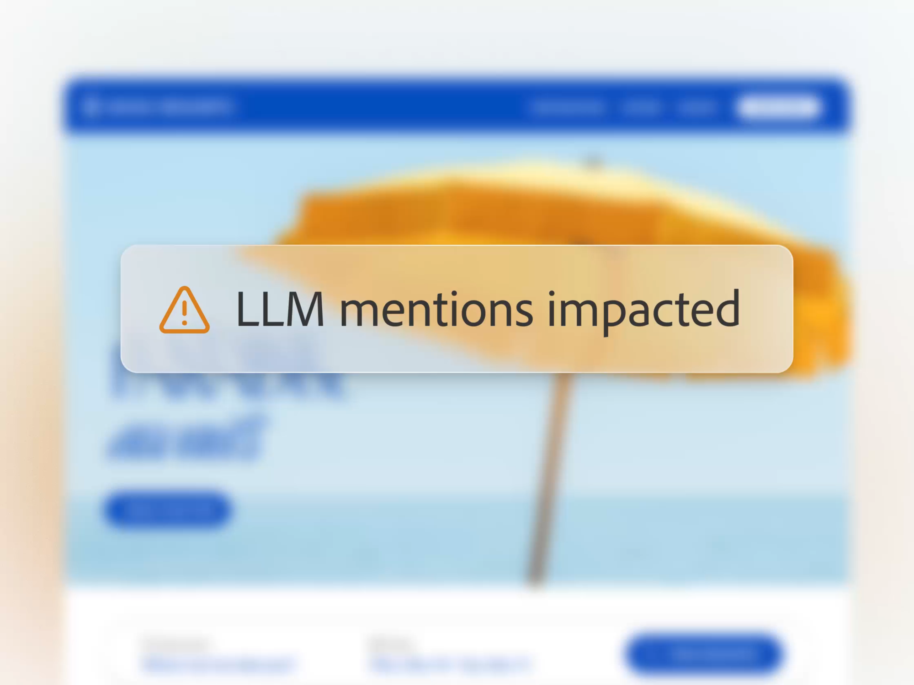

Own your presence within AI search and discovery.
Ensure your brand, products, and content are visible and credible as customers turn to AI to make decisions.
- Access an insights-backed database from Semrush, with millions of prompts informed by Google, ChatGPT, and other AI platform clickstream data.
- Understand if, how, and where your brand and content are showing up in AI search results.
- Track your AI search share-of-voice and AI-driven citations against competitors as well as industry benchmarks to identify gaps.
- Detect potential inaccuracies or hallucinations in AI answers that may be impacting brand perception and trust.